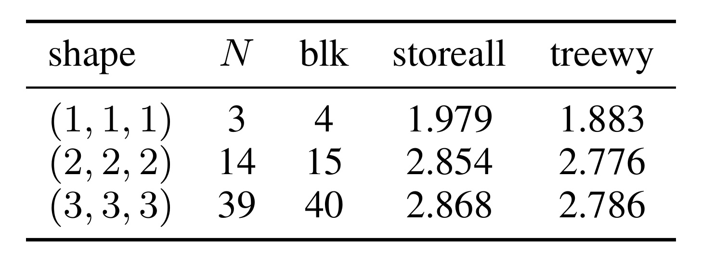
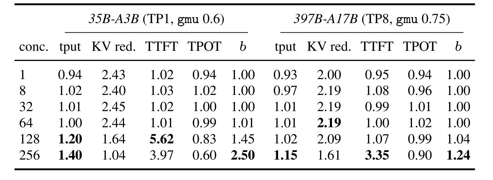
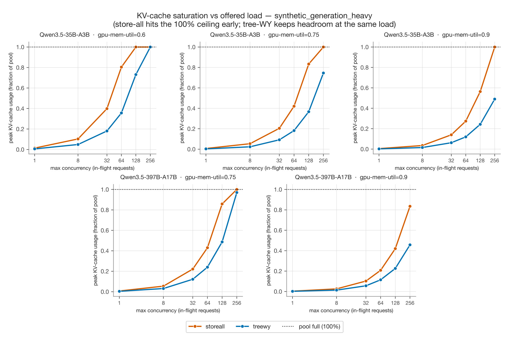
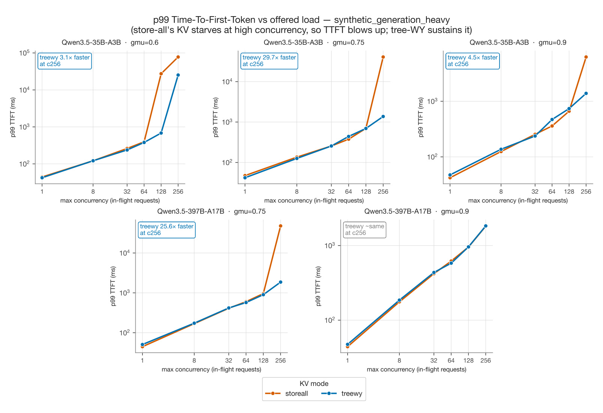
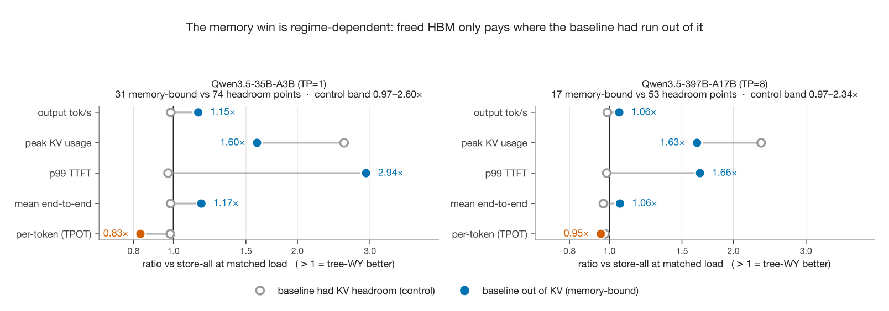
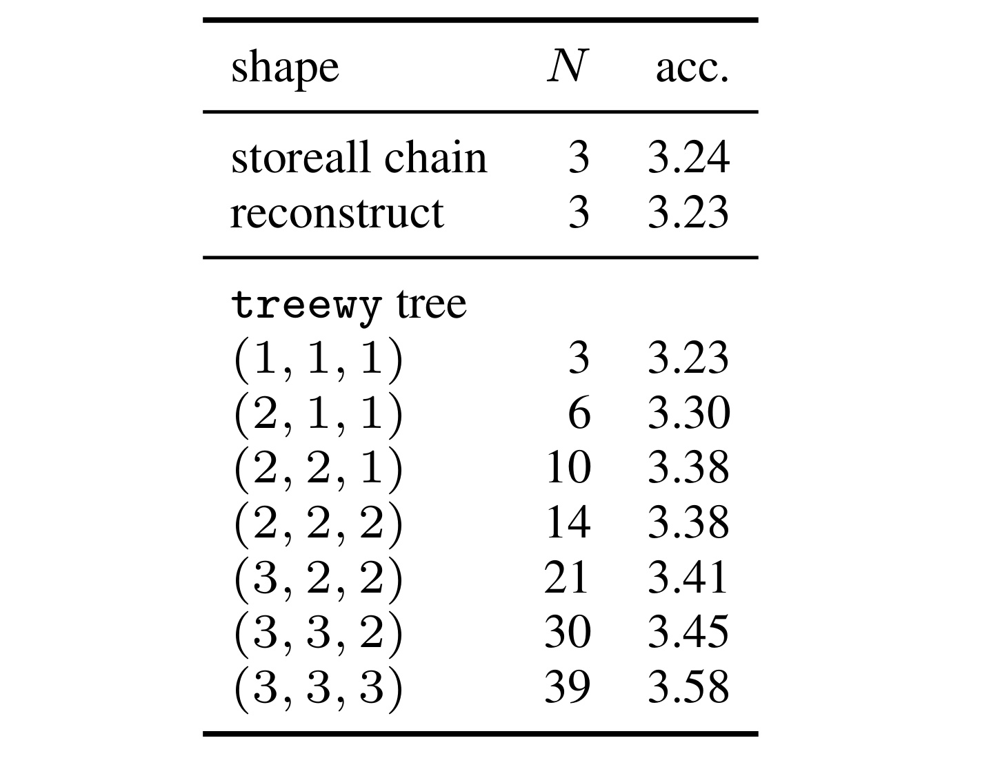
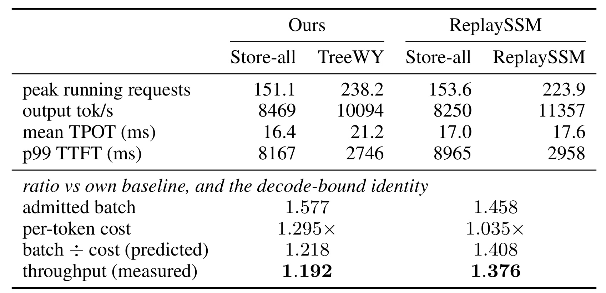
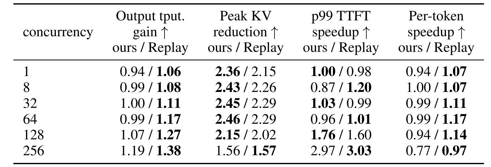

TreeWY：面向 Gated DeltaNet 混合模型的树状推测验证
TreeWY: Speculative Verification for Gated DeltaNet Hybrids 由 Thomson Reuters 的 Sneha Murthy Ghantasala 撰写，2026 年 8 月 21 日公开，arXiv:2608.20961。它重写 Gated DeltaNet（GDN）混合模型的 speculative verification 状态计算与提交路径。原型未 upstream vLLM fork，仓库未核验。
GDN 将整个前缀压缩进一个无法截断或局部回滚的有损递归状态；speculative verification 却要在接受结果未知前为每个 draft 节点保留完整状态，而树分支之间又不能共享快照，因而宽、高接受率的 draft tree 会先被 HBM 容量卡死。
1. 背景和问题
Speculative decoding 的出发点是自回归解码的计算利用率：每次 target model 前向只生成一个 token，大量时间花在从 HBM 搬运权重和状态，GPU 算力并未吃满。一个便宜 drafter 或 MTP head 先提议若干候选，target 在一次并行前向中完成验证，再接受与 target 自身分布一致的最长前缀。链状 draft 每个深度只有一个候选；树状 draft 在同一深度覆盖多个分支，有机会用更多 target 空闲计算换取更高的接受概率。对纯 softmax-attention 层，验证期只要把 draft KV 追加到 cache，拒绝后移动指针即可；树的公共前缀也可共享 KV，回滚几乎没有额外复制成本。
GDN 混合模型的取舍刚好相反。软最大注意力的 KV cache 随上下文线性增长，GDN 每个头只维护一个 $d_v\times d_k$ 状态矩阵，因而普通解码中长度无关。论文的两个 Qwen3.5 对象均为 3:1 的 GDN-to-softmax 比例，且 $d_k=d_v=128$：35B-A3B 有 30 层 GDN、每层 32 个 value head，已提交状态约 30 MiB/序列；397B-A17B 有 45 层、64 个 value head，约 90 MiB/序列。它们在 32K 上下文的 softmax KV 分别约 0.625 与 0.94 GiB/序列，所以 GDN 的定长状态原本是长上下文优势。但状态是整个前缀的有损摘要，不像 KV 列表那样能把末尾 token 切掉；因此并行验证结束时，系统不知道哪个中间状态将成为接受节点，只好全部保留。
现行 store-all 在验证 $k$ 个链节点时保存 $k+1$ 份完整 GDN 状态，树上 $N$ 个节点则需 $N+1$ 块，并且旁支之间无法共享。只用深度 3 的 draft chain，35B/397B 就从 30/90 MiB 增长到 120/360 MiB/序列；把宽度增加到 $N=39$ 时，快照块数成为 40。这不只是一个局部 kernel 的存储问题：更少的可用 KV pool 会降低可接纳请求数，触发 preemption 与排队，最终反映到吞吐和 p99 TTFT。因而论文的问题不是“少写几次矩阵”，而是能否在不保存中间全状态的情况下，一次计算所有链/树节点输出，并在验证结果出来后精确恢复唯一被接受的状态。
近期路线的边界也使 TreeWY 的定位更清楚。ReplaySSM 把 checkpoint 与短历史缓存结合，延后状态物化，在 verify window 内实际上也求解同类三角系统，但当前论文对照的实现聚焦于 chain。STree 能在 Mamba2 树上利用纯标量衰减的累积和，却不能直接处理 GDN 中标量衰减乘以 rank-1 correction 的非对易转移。Bole 与本文同期、也做树状闭式验证，但面向 SGLang，论文时没有可供本文头对头运行的代码。TreeWY 的核心新意是把 DeltaNet 链上 WY/UT 变换改成树的严格祖先形式，再把验证和 rollback 收束为同一个伪值矩阵。
从 serving 容量角度看，这个问题与传统 KV 量化或 paged allocation 不同：需要消除的不是已提交前缀的必要状态，而是只在一个 verify window 中存活、且绝大多数会被拒绝的瞬时分支状态。这也意味着验收必须同时看三层：代数等价性、瞬时 HBM 曲线，以及内存余量是否真的转化成 admission 与尾延迟改善。
分析时不能把“每头伪值小 128 倍”、“peak KV 少 2–3 倍”和“特定负载 TTFT 少 40 倍”混成一个加速声称；三者分别是局部表示、服务池峰值与排队结果，必须分层比较。
2. 方法
2.1 Gated DeltaNet 状态递推与快照瓶颈
符号解释：$S_t\in\mathbb{R}^{d_v\times d_k}$ 是前缀压缩状态，$k_t$ 与 $v_t$ 分别是当前 key/value，$\alpha_t\in(0,1)$ 控制旧状态衰减，$\beta_t\in(0,1)$ 控制新写入强度，$I-\beta_tk_tk_t^\top$ 先擦除状态在 $k_t$ 方向已经可预测的成分，再写入 $v_t$。对应的输出读取关系如下：
符号解释：$q_t$ 是 query，$o_t$ 是本层对该 draft 节点的输出。store-all 之所以保存每个 $S_t$，就是因为验证前无法确定哪个 $S_t$ 对应最终接受节点。TreeWY 则不再求每个中间状态，而把该递推改写为衰减加一个伪值外积：
符号解释：$\widetilde v_t$ 是伪值，它不是原始 value，而是原始写入减去旧状态沿 $k_t$ 的预测。这个重写把“必须沿路径走完才得到状态”的问题，变成“联立求出所有伪值”的问题。一旦 $\widetilde v_t$ 已知，状态和输出都可写成对前驱节点的衰减加权和，无需持久化中间 $S_t$。
2.2 树祖先遮罩与 WY 三角求解
作者将 $N$ 个 draft 节点按 DFS 先序排列，使每个祖先 $i$ 的索引都小于后代 $t$。链上的前驱关系是 $i
符号解释：$\operatorname{diag}(\beta)$ 把每个节点的写入门放在对角线，$G$ 描述祖先节点的 key 相似度与衰减传递，$R$ 是只含原始值、门和已提交状态 $S_0$ 的已知右端，不依赖任何中间 $S_t$。矩阵元素具体为
符号解释：$g_t$ 是从 $S_0$ 到节点 $t$ 的累积衰减，$\mathbf{1}[i\prec t]$ 只在 $i$ 是 $t$ 的严格祖先时取 1，$key$ 内积体现 rank-1 delta correction 之间的交互，旁支节点因指示函数而完全不进入当前行。右端为
符号解释：第一项是当前原始写入，第二项是已提交前缀沿累积衰减后对当前 key 的预测。DFS 次序与祖先遮罩使 $G$ 严格下三角，因此 $I+\operatorname{diag}(\beta)G$ 为单位下三角，一次前代就能解出全部 $\widetilde V$。树变宽只会增加未知节点和 mask 结构，不会恢复成“每分支建一条递推”。这正是 TreeWY 超越 Mamba2 纯标量门累积技巧的部分：GDN 的矩阵转移不对易，必须把 rank-1 纠正纳入 WY 系统。
2.3 只重建被接受状态
验证得到接受节点 $a$ 后，作者不从一组快照中索引，而是从 $\widetilde V$ 沿 $a$ 的唯一祖先路径恢复状态。此时接受结果已知，因而没有必要重建任何被拒绝分支，只需计算下式：
符号解释：$i\preceq a$ 包括 $a$ 自身及其全部祖先，$g_a/g_i$ 把节点 $i$ 的伪值写入衰减到 $a$，$g_aS_0$ 保留旧前缀状态的衰减部分。得到的 $S_a$ 成为下一轮的 $S_0$，被拒绝分支不产生任何持久状态。正确性不是“近似回滚”：论文在 fp64 中与每节点递推匹配到约 $10^{-15}$，fp32 约 $10^{-7}$，生产 Triton 核与该参考在 bf16 容差内一致。两种方案的验证期存储因此可概括为
符号解释：$N$ 是 draft 节点数，$d_vd_k$ 是每头完整状态大小，$Nd_v$ 是验证期伪值矩阵，最后的 $d_vd_k$ 是已提交单状态。在 $d_k=d_v=128$ 时，一个伪值比一个状态矩阵小 128 倍，但这不能被等同为整个服务的内存或吞吐恒定改善 128 倍；模型权重、softmax KV、激活与调度都仍在，实测 peak KV 使用改善是 2–3 倍量级。

原文 Table 4 把上面的空间复杂度直接投影到深度 3 的树形：$(1,1,1)$、$(2,2,2)$、$(3,3,3)$ 分别有 $N=3,14,39$ 个 draft 节点，store-all 的 blk 为 $N+1=4,15,40$，因为它必须保留已提交状态与每个候选节点的全状态。TreeWY 在三种形状下都只持久一块已接受状态，验证期用 $\widetilde V$ 承载分支信息，所以宽度不再把全矩阵状态成倍复制。storeall/treewy 两列接受长度在采样噪声范围内接近，说明状态块的变化对应的是表示与 commit 方式，而非改变验证语义。因此这个对象属于方法复杂度证据：它验证了“只重建被接受状态”如何把 $O(Nd_vd_k)$ 的快照项变成小伪值矩阵加一个持久状态。
2.4 vLLM 中的 chain/tree 提交路径
实现端通过 mamba_state_commit=reconstruct 把默认 store_all 替换为接受状态重建，draft_tree_widths 按层给出分支因子。chain 或全 1 宽度的退化树可把 verify 与 commit 融合进一个 CUDA-graph 可捕获的 Triton 核。真正 $w>1$ 的树需要非因果祖先 mask，当前无法从 CUDA graph 重放，vLLM 因而将整个模型降为 piecewise capture，连 GDN mixer 也会离开 graph。同时，DFS 树的任意前缀不再是同一拓扑；当本步 token budget 放不下完整树时，请求会跳过 speculation，而不是把树截成一个 DFS 前缀。
这项工作没有训练阶段：$k,v,q,\alpha,\beta$ 仍由原模型输出，TreeWY 只改变推理时 verify window 的计算顺序、临时状态表示和 commit 时机。论文使用 greedy drafting/verification，以共享的 no-speculation 参考验证 token 流；由于 bf16 核的浮点求和顺序不同，token stream 不保证与 store-all 位级一致，因而评估比较的是共同参考的正确性与接受长度。这个区分很重要：数学闭式求解已经覆盖树，但当前工程 kernel 还没有把树的非因果遮罩融合进可捕获执行路径。
3. 实验结果
3.1 模型、工作负载与正确性口径
主实验在 B200（178 GiB HBM/device）上服务 Qwen3.5-35B-A3B（TP1）和 Qwen3.5-397B-A17B（TP8），使用深度 3 的 MTP draft chain，对比 TreeWY 和 vLLM 默认 storeall。GPU memory utilization（gmu）取 0.6、0.75、0.9；ShareGPT、spec-bench 与三个合成工作负载扫 1、8、32、64、128、256 并发，BurstGPT 另外扫 4–64 req/s 到达率。prefix caching 统一关闭，所以实验测到的是状态方案与当前调度路径的组合效果，不包括 prefix reuse 的交互。
一个 matched point 是同一 dataset/concurrency/gmu 在两种模式下的配对；总计 175 点，其中 35B 有 105 点，397B 有 70 点。全部点上接受长度与 storeall 几乎相同，平均绝对差 0.039，最大差 0.33，真实 prompt 的每个深度均在 0.01 内。因而后面的服务指标可以在基本一致的接受工作量上读，而不是用更激进或更保守的接受换取速度。计算成本约为 85 B200 GPU-hours：35B 主扫描 11.8，397B 主扫描 62.5，ReplaySSM 对比 11.1；没有计入一次性模型加载与启服开销。
3.2 内存受限与非受限区间
表 1 固定两个模型各自最紧的已测预算：35B 为 gmu=0.6，397B 为 gmu=0.75。列值是 5 个固定并发工作负载的几何平均，大于 1 表示 TreeWY 更好；KV red. 是 peak KV 使用降低，$b$ 是 peak admitted requests 比率。

表 1 的读法不是只找每列最大数，而是看 $b$ 何时离开 1。35B 在 1–64 并发时，吞吐与 TPOT 基本持平，即使 KV 降低仍为 2.40–2.45 倍，释放的余量也尚未被用来接纳更多请求。到 128/256 并发，$b$ 升到 1.45/2.50，吞吐为 1.20/1.40，p99 TTFT 改善 5.62/3.97 倍，TPOT 比率却为 0.83/0.60：TreeWY 并非让每个 token 更快，而是允许更大批次进入系统。397B 的 knee 更靠右，256 并发时 $b=1.24$、吞吐 1.15、TTFT 3.35，说明同一机制成立但扫描越过饱和点的范围更小。
下图把“knee”变成可视曲线：橙色 storeall 与蓝色 TreeWY 在不同规模/gmu 下逐步接近 KV pool 顶线。

Figure 1 中上排是 35B 的 gmu=0.6/0.75/0.9，下排是 397B 的 0.75/0.9。在紧预算面板，storeall 曲线先撞上 100% 池顶，TreeWY 在相同 offered load 仍保留显著余量；把 gmu 提高到 0.9 后，两条曲线在扫描内更久不饱和，于是存储差距还在，但对 admission 的影响变小。这也解释附录表 3 的现象：35B 的 knee 从 gmu=0.6 时 128 并发移到 0.75 时 256，0.9 内没有明显 knee；397B 只在 0.75/256 出现。因此“peak KV 降低 2–3 倍”是内存事实，“吞吐与 TTFT 改善”则需基线已经被这块内存限流。
KV 饱和之后的直接用户体感是排队时间。Figure 2 使用 generation-heavy 工作负载展示 p99 TTFT 随并发的对数曲线。

Figure 2 左上到右上的 35B 三面板分别在 256 并发标注约 3.1、29.7 与 4.5 倍，397B gmu=0.75 为 25.6 倍，但 397B gmu=0.9 面板近似持平。全扫描的最大差距不在 256，而在 35B、gmu=0.6、128 并发：storeall 已饱和而 TreeWY 尚未饱和，p99 TTFT 为 27489 ms 对 683 ms，约 40 倍。这种非单调“倍数”正是队列系统的特征：收益在两种方案的饱和点之间最大，当两者都尚未饱和或都已接近负载上限时会收敛。所以 40 倍只是特定工作点，不是 TreeWY 的固有 latency 加速倍数。
作者进一步把 175 个 matched points 按 storeall 是否已无 KV 余量分组，以 headroom 点作为控制组。

Figure 3 左侧 35B 有 31/105 个 memory-bound 点：吞吐 1.15 倍、peak KV 余量 1.60 倍、p99 TTFT 2.94 倍、平均端到端 1.17 倍，而 per-token TPOT 只有 0.83 倍；右侧 397B 有 17/70 个受限点，对应值为 1.06、1.63、1.66、1.06 和 0.95。实心点证明释放 HBM 能穿透到端到端指标，但同时表明更多请求进入 running batch 会拉长单请求的 per-token 时间。空心 control 点中，除 KV 仍有 2.60/2.34 倍的控制带余量之外，其他指标位于约 0.97 附近的小波动带。这张图对主张的支持很精确：TreeWY 的优势是把瞬时状态内存换成可用 admission 容量，不是无条件降低每 token 算力成本。
3.3 链与树：宽度可承受，吞吐尚未获益
主表使用深度 3 的 chain，树实验则在 35B、TP1、gmu=0.9、spec-bench、greedy、无 prefix caching 条件下扫每层分支因子。

Table 2 的 storeall chain 接受长度为 3.24，reconstruct chain 和全 1 宽度树都为 3.23，说明重建路径没有靠改变 acceptance 换取内存。将形状从 $(1,1,1)$ 扩到 $(3,3,3)$，$N$ 从 3 增到 39，接受长度从 3.23 升到 3.58；$(2,2,1)$ 到 $(2,2,2)$ 的 $N$ 从 10 增到 14，接受长度仍为 3.38，显示宽度回报会递减。更宽的树只是在各深度覆盖更多概率质量，可接受路径的最大长度仍被深度 3 封顶。这些数字支持“接受率提高”，并不支持“更宽必然更快”。
另一次宽度扫描与 Table 2 的 acceptance 绝对值口径不同，不宜跨表相减。结合方法章的状态块证据，宽树已在内存上可承受，但每步仍需把 $N+1$ 个 token 送进 target，非因果 mask 又使模型落入 piecewise capture。因此论文只宣称树“已启用且正确”，而非 speedup：chain 已有融合可捕获核，tree 尚只证明数学和内存路径可行。
3.4 与 ReplaySSM 的正面对照
ReplaySSM 是最重要的 chain-mode 同期基线。它与 TreeWY 在 verify window 内共享三角求解思想，主要差别是 ReplaySSM 通过 checkpoint 加短历史延后物化状态，TreeWY 在每次 commit 重建并写入接受状态。两个 arm 基于不同 vLLM build，因此论文各自归一化到自己的 store-all image；两个 store-all 吞吐在 1% 内，使比率具有可比性，但仍不如同一个 commit 上做组件替换严格。

Table 5 先给绝对值：TreeWY 这个 arm 的 running requests 从 151.1 增到 238.2，吞吐从 8469 增到 10094 tok/s，但 TPOT 从 16.4 增到 21.2 ms；ReplaySSM 从 153.6 增到 223.9，吞吐从 8250 增到 11357，TPOT 仅从 17.0 到 17.6 ms。归一化后，TreeWY 的 admitted batch 为 1.577，per-token cost 为 1.295，二者相除预测 1.218 倍吞吐，实测 1.192；ReplaySSM 为 1.458/1.035=1.408，实测 1.376。两组预测都在实测 3% 内，说明差距不在能接纳多少请求，而在每 token 成本。论文假设 TreeWY 每轮 materialize accepted state 是主因，但作者没有实现 deferred-write commit 来做因果验证，所以这只是 working hypothesis。
全负载轴进一步检查这个判断，其中每个单元的左/右数字分别是 TreeWY/ReplaySSM，都相对各自的 store-all 归一化。

Table 6 中 ReplaySSM 在 1–64 并发的吞吐已有 1.06–1.17，per-token 为 1.07–1.17，而这几个点的 admitted batch 并未增大；TreeWY 同期吞吐为 0.94–1.00，per-token 为 0.94–1.00。这能排除“ReplaySSM 只是用更多并发换吞吐”的解释。到 256 并发，两者 peak KV reduction 为 1.56/1.57，说明解除快照的内存机制基本打平；吞吐却是 1.19/1.38，per-token 为 0.77/0.97，差距仍在提交与调度路径。BurstGPT 64 req/s 下两者 p99 TTFT 改善分别 10.72 和 10.20 倍，又说明 TreeWY 的端到端价值并未因步成本较高而消失，只是链路径仍有明确的可优化空间。
3.5 证据可以支持到哪里
综合起来，链状实验已经支持三个层次：第一，acceptance 基本不变，闭式求解没有牺牲验证语义；第二，每个 GDN 层不再为每个 draft 位置保存完整状态，peak KV 压力显著降低；第三，当 storeall 已经撞上内存 knee 时，这部分余量会通过 admission 转化为吞吐和 TTFT。但它不支持“任意负载都更快”：headroom control 点已显示吞吐可损失几个百分点，ReplaySSM 又证明当前 chain commit 的 per-step cost 不是最优。树实验则只支持“状态内存不再随宽度线性爆炸、接受长度略增”，尚未支持吞吐优势。
4. 总结
4.1 我的判断
TreeWY 的价值在于它把一个“回滚需要状态快照”的系统直觉，改写成“先求出全部伪值，再只提交唯一接受路径”的线性代数问题。数学上，严格祖先 mask 使 DeltaNet 的链状 WY/UT 变换覆盖真树；系统上，它把验证期的全状态复制变成小伪值矩阵和一次 accepted-state reconstruction。主扫描也用 headroom control 明确限定了收益条件，没有把内存节省包装成固定 kernel speedup。对混合 LLM 服务而言，这种“表示重写先解除容量约束，再单独优化执行核”的分层思路，比一个没有条件的加速倍数更有迁移价值。
4.2 局限与风险
- 模型外推有限。 实验只覆盖 Qwen3.5 同一家族的 35B-A3B 和 397B-A17B，且两者的 GDN/softmax 比例与 head 维度相近；对其他 gated linear attention 变体、不同门分布与更小模型的加速/内存平衡还不能直接推广。
- 服务口径仍偏受控。 所有实验禁用 prefix caching、使用 greedy drafting/verification，又在 B200 上执行；真实生产中 prefix reuse、采样、动态批处理、混合请求长度和其他 GPU 可能改变 knee 位置。
- 当前 chain 路径的步成本仍高。 ReplaySSM 在相近内存余量下有更好吞吐与 per-token 指标，作者将差距假设为每轮 materialize accepted state，但未实作 deferred-write 消融，因此归因尚未验证。
- 树只是可行，还不是更快。 非因果祖先 mask 使当前 vLLM 落入 piecewise capture，$N+1$ 个 target token 的成本又快于 acceptance 增量；宽度从 $N=14$ 增到 39 已显示明显边际递减。
- 可复现与比较存在缺口。 原型 fork 未 upstream，本轮未核验独立代码仓库；与 ReplaySSM 的两组运行在不同 vLLM build 上，与 Bole 也没有头对头 kernel 实验，这会限制对调度细节的强因果结论。
4.3 后续跟进
- 先做 commit 路径消融。 在同一 vLLM commit、同一 kernel 集合上增加 deferred-state-write 开关，测试它是否真能把 Table 5/6 的 per-token 差距关掉；这是验证作者 working hypothesis 的最短路径。
- 把真树融合进可捕获核。 需要让树祖先 mask、三角求解、输出读取和 accepted-state commit 共同进入 graph-capturable 路径，再重新扫深度/宽度/接受长度，才能判断树的临界吞吐点。
- 扩大服务分布。 至少补充第二个模型家族、prefix caching 打开、非 greedy 采样、更长输入与多 GPU 型号，并报告 knee 随状态尺寸、KV 池与请求长度分布的迁移。
- 与 Bole/ReplaySSM 建立统一证据面。 用同一模型、负载和树形比较内存峰值、kernel 时间、admission 与 TTFT，区分闭式代数、状态物化和 serving engine 调度的贡献。
TreeWY 已证明 GDN 验证无需为回滚保存每节点全状态。下一步是追平 ReplaySSM 的 chain 步成本，并让 tree 的内存优势转成吞吐。